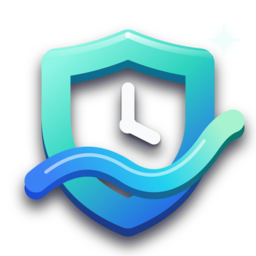

FlowGuard
Prototipe 27 layar · tombol utama sudah bisa diklik
Mulai dari layar Login →
Alur Utama
1
Workspace Utama — Idle State
2
Pre-Session Cognitive Check-in
3
Active Focus Session (Flow Mode)
4
Micro-Break Overlay (20-20-20)
5
Post-Session Check-in
6
Insights & Burnout Radar
7
Perpustakaan Istirahat (Break Library)
19
Landing / Login — FlowGuard
20
Quick Onboarding (3 Langkah)
21
Edit Profil (Modal)
Pengaturan
8
Pengaturan & Wellness Guardrails
9
Pengaturan: Sesi Adaptif
10
Pengaturan: Mode Konteks
11
Pengaturan: Profil & Persona
12
Pengaturan: Tampilan
13
Pengaturan: Notifikasi
14
Pengaturan: Soundscape
15
Pengaturan: Posture Check
16
Pengaturan: Motivasi
17
Pengaturan: Data & Privasi
18
Pengaturan: Bantuan
Panduan Istirahat
22
Panduan: Relaksasi Mata 20-20-20
23
Panduan: Peregangan Leher & Bahu
24
Panduan: Box Breathing (4-4-4-4)
25
Panduan: Peregangan Pergelangan Tangan
26
Panduan: Peregangan Punggung & Bahu
27
Panduan: Palming Mata